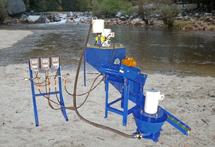

ICON IGR 100 Planta de Recuperación de Oro
iCON Gold Recovery Corp. se enorgullece en presentar:
La IGR 100 Plant - i150 planta artesanal

La Planta IGR 100 es un sistema modular autónomo de recuperación de oro.
Este utiliza la clasificación y la gravedad mejorada para asegurar que se está obteniendo el mejor de oro y las pepitas grandes.
|
En la siguiente configuración estándar de flujo de materiales:
|
Estos 2 procesos fueron diseñaos por ingenieros metalúrgicos para máxima recuperación de minerales preciosos pesados.
iPumps puede ser utilizado para suministrar el material al concentrador y/ o poner convenientemente los residuos donde quiera. Esta bomba lodo puede ahorrar horas de trabajo y fácilmente mover su alimentación y/o los residuos largas distancias o cuesta arriba. (Véase la curva de rendimiento suministrada). El iPump ha sido diseñado por ingenieros profesionales usando Ni-Hard-4 en el impulsor para asegurar una larga vida útil y fiabilidad. iPump viene con VFD que le permite al usuario ajustar fácilmente la velocidad del flujo y conectar la bomba a un generador eléctrico convencional de una sola fase.
iScreen viene con una malla de 2 mm. Esta coincide con el tamaño de alimentación máximo del concentrador. El iScreen convenientemente puede clasificar su material en dos fracciones de tamaño, «´más de 2 mm ', 'menos de 2 mm´. IScreen utiliza un motor Italvibras de alta calidad y viene con VFD para ajustar la frecuencia de vibración.
El mini Grizzly y la nugget trap se proporcionan con el fin de capturar cualquier 'partícula de gran tamaño "que usted pueda tener. Esto le dará confianza para saber que usted está recogiendo el rango de tamaño máximo de oro, del oro más fino atrapado en el concentrador o cualquier pepita capturada en el grizzly.
La estación de control es simplemente un montaje en rack para organizar sus líneas de agua y cableado eléctrico. Viene con un colector de agua para distribuir una entrada de agua potable a varias funciones en la Planta IGR 100. La estación de control está diseñada para montar el VFD suministrado con cada componente.
Todos los componentes están emparejados en la capacidad y son transportables en el campo. Cada artículo viene con una unidad de frecuencia variable (VFD). Estas permiten que el uso se pueda ajustar fácilmente para cada elemento según sus necesidades.
El VFD también permite el funcionamiento de diferentes tipos de fuentes de alimentación utilizadas en todo el mundo. Los VFD son impermeables y aptos para servicio en exteriores. Todos los componentes están diseñados para conectarse al estándar de 220 voltios, o un generador de potencia de1 fase a gasolina.
La fotografía y las imágenes muestran la configuración estándar y todos los componentes suministrados.
| Vista 1 | Vista 2 |
Las vistas 1 y 2 son los dibujos de ingeniería que muestra la configuración estándar de la Planta IGR 100.
ICON IGR 100 Planta de Recuperación de Oro Incluye:
- 1 Concentrador iCON i150
- 1 iCON iPump 1.0
- 1 iCON Zaranda Vibrante iCON de iScreen con malla de 2 mm
- 1 Mini Grizzly y canalon para capturar "Partículas de gran tamaño"
- Estación de control para organizar convenientemente sus suministros de agua y electricidad
- 1 Kit de instalación para conectar todos los componentes
No Incluye:
- Bomba de agua para suministrar agua de proceso al concentrador y zaranda
- Generador
CON IGR 100 Planta de Recuperación de Oro Especificaciones |
|
| Capacidad | 2 toneladas por hora que pasan de la Zaranda a el concentrador. La alimentación a la zaranda deberá ser mayor en función de la distribución del tamaño de su material |
| Requerimiento Eléctrico | 8KW Generador de 220Volt, monofásico |
| Consumo de Agua | 50 mm, se sugiere bomba externa |
Visita nuestra página de Distribuidores Globales para detalles y precios regional en su área.
iCON Gold Recovery ofrece seis tipos de plantas de procesamiento de minerales.
Haga clic a continuación para obtener más información sobre cada uno:
iCON Planta IGR 100 - iCON Planta IGR 500 - iCON Planta IGR 1000
iCON Planta IGR 3000 - iCON Planta IGR 6x7 Battery - iCON Planta IGR 10K Alluvial
Haz clic aquí para ver todas las líneas de productos de iCON Gold Recovery:
Resumen de Productos - iCON Concentradores
iCON Bombas - Zarandas iCON - Plantas iCON